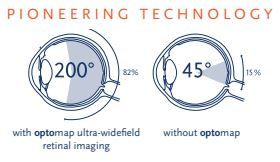

Free, thorough and unhurried.
If you are a UK resident, you can get a free NHS eye examination in Scotland. It isn't just a test of your sight — it's a thorough examination to check the health of your eyes, find problems before they become more serious, and look for signs of other health conditions.
How often?
Every two years if you are aged 16 to 59.
Every year if you:
- are under 16
- are 60 or over
- have ocular hypertension or diabetes
- have glaucoma
- are 40 or over and a parent, brother, sister, son or daughter has glaucoma

The Enhanced Sight Test.
The key to having — and keeping — healthy eyes is catching problems early, often before you notice any symptoms. Our Enhanced Sight Test adds two advanced scans to your NHS examination: optomap® ultra-widefield imaging and an OCT scan.
Together they give Jacqueline the most complete view of the health of your eyes — across the whole retina, and beneath its surface.
Book an Enhanced Sight Test
See the whole picture.
A standard retinal camera photographs around 45° of the back of the eye — roughly 15–20% of the retina. In a single, quick image, optomap captures around 200°, or 82% of the retina.
That matters because many problems — retinal tears and detachments, some tumours, and changes from diabetes and high blood pressure — can begin in the outer edges of the retina that a standard photograph simply can't see.
- Quick and comfortable — no puff of air, nothing touches your eye
- Usually no need for dilating drops
- We show you your own images on screen
- A permanent record we can compare at every future visit
Beneath the surface.
Optical coherence tomography (OCT) uses harmless light waves to build a detailed, cross-sectional 3D image of the layers of your retina and optic nerve — a little like an ultrasound, but using light.
It reveals changes that can't be seen with a standard examination, often years before they affect your sight, helping with the early detection and monitoring of:
- Glaucoma — measuring the nerve fibre layer for early thinning
- Macular degeneration (AMD) — both wet and dry forms
- Diabetic eye disease, including swelling at the macula
- Macular holes, fluid and other changes at the centre of vision
We use the Topcon Maestro, which combines OCT with retinal photography. The scan takes seconds, and nothing touches your eye.
Standard or Enhanced?
| NHS eye examination | Enhanced Sight Test | |
|---|---|---|
| Vision & prescription check | ✓ | ✓ |
| Examination of eye health | ✓ | ✓ |
| Ultra-widefield optomap® image of 82% of the retina | — | ✓ |
| OCT scan beneath the retinal surface | — | ✓ |
| See your own images on screen | — | ✓ |
| Digital record to compare at future visits | — | ✓ |
| Cost | Free for UK residents in Scotland | £35 in addition |
Who benefits most?
- Are over 40, or have a family history of glaucoma or macular degeneration
- Have diabetes or high blood pressure
- Are short-sighted — especially highly so
- Have noticed flashes, floaters or changes in your vision
- Are visiting us for the first time, so we can record a baseline for the future
Does it hurt?
Not at all. Both scans take just seconds, there's no puff of air and nothing touches your eye.
Will I need eye drops?
optomap usually works without dilating drops, so you can normally drive afterwards. Your optometrist will let you know if drops are needed for any reason.
How much longer does it take?
Only a few extra minutes, and we'll talk you through your images as part of your examination.
Do I need it every time?
We recommend it at every examination so we can compare your images over time — even small changes can be significant.
Can I add it on the day?
Yes — just let us know when you arrive, or choose the Enhanced option when you book online.
What to expect.
Your optometrist will ask about your general health, medication, family history and anything you've noticed about your eyes. Your eyes are measured with the ZEISS i.Profiler plus and your prescription refined on our ZEISS VISUPHOR digital refraction system. The front of your eyes is examined with a ZEISS digital slit lamp — we can capture images and video to show you — and, depending on your age and history, we may also check your eye pressure and test your field of vision on the ZEISS Humphrey Field Analyzer.
At the end, we'll explain everything in plain language and let you know when to come back. If you need glasses, our Dispensing Optician will help you choose frames and lenses — with no pressure and no rush.
What to bring
- Your current glasses, sunglasses and contact lenses
- A list of any medication you take
- Details of any eye conditions in your family
We look forward to welcoming you.
Book your eye examination online in a few quick steps, or call us – we're always happy to help.